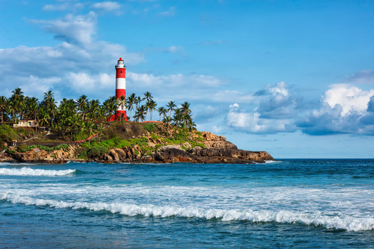
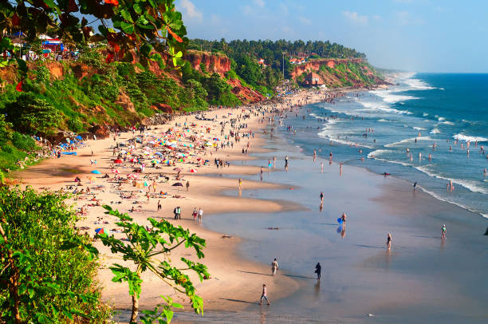

Relax by the Shores of Kerala
Kerala’s pristine beaches, golden sands, and tranquil waters offer the perfect escape for beach lovers.
Kovalam Beach
Kovalam is Kerala's most famous beach destination, known for its crescent-shaped shoreline and three main beaches: Lighthouse Beach, Hawa Beach, and Samudra Beach. Visitors can enjoy sunbathing, swimming, and water sports or simply relax while watching a spectacular sunset over the Arabian Sea.


Varkala Beach
Varkala Beach, also known as Papanasam Beach, is a serene escape known for its unique cliffs that offer stunning views of the sea. Famous for its natural springs and Ayurvedic treatments, Varkala is a haven for relaxation and rejuvenation. The beach also holds spiritual significance, with the ancient Janardhana Swamy Temple nearby.
Marari Beach
Marari Beach, located near Alleppey, is an idyllic destination for those seeking peace and tranquility. Surrounded by coconut groves, this beach is perfect for leisurely strolls, yoga, or experiencing the local fishing village life. It’s an ideal getaway for those who wish to escape the hustle and bustle of city life.


Bekal Beach
Located near Bekal Fort, Bekal Beach is a scenic stretch of golden sand bordered by casuarina trees. This beach offers panoramic views of the Arabian Sea and is perfect for picnics, evening walks, and photography. The combination of the historic fort and the serene beach makes it a must-visit destination in Kerala.